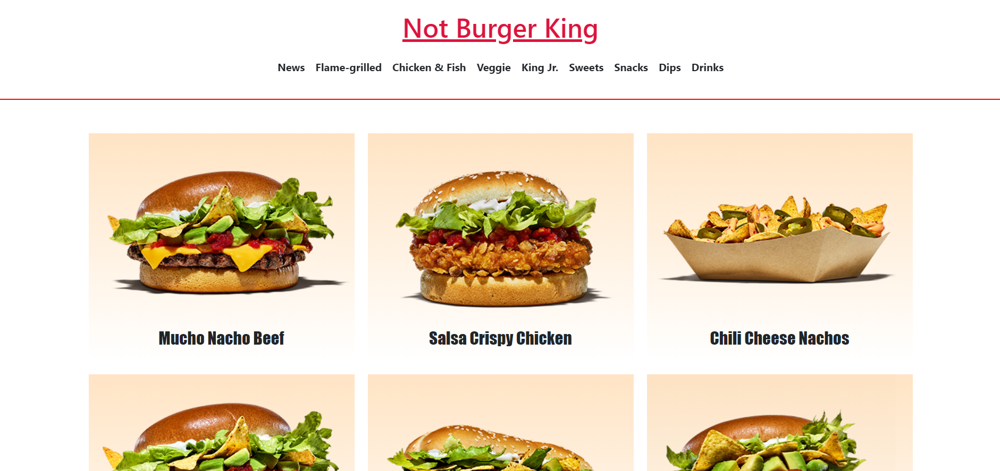
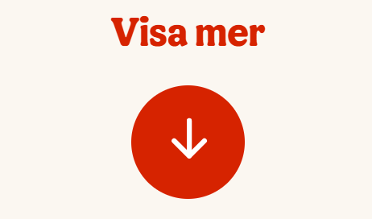
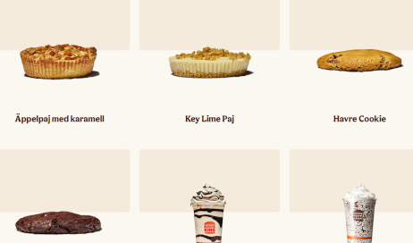
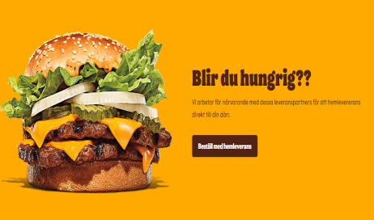

En hemsida för en restaurang kan förbättras på många sätt. Jag kan till exempel lära mig att lägga knappar som visar mer information och val för användaren att se. 'Visa mer' en en sån knapp som ser ut smidigt och enkel.